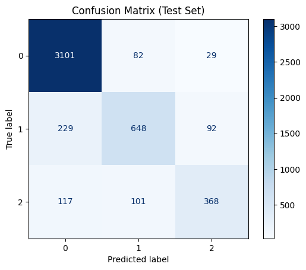

SVC Balanced#
import pandas as pd
import numpy as np
import matplotlib.pyplot as plt
import plotly.express as px
import plotly.graph_objects as go
import seaborn as sns
import os
import pickle # For saving and loading the model
from sklearn.tree import DecisionTreeClassifier
from sklearn.model_selection import train_test_split, cross_val_score
from sklearn.metrics import classification_report, accuracy_score, f1_score, make_scorer
import optuna
from sklearn.ensemble import RandomForestClassifier
import os
import xgboost as xgb
import matplotlib.pyplot as plt
from sklearn.model_selection import train_test_split
from sklearn.metrics import roc_auc_score, classification_report, confusion_matrix, ConfusionMatrixDisplay
import optuna
import joblib
import time
import numpy as np
pd.options.display.float_format = '{:.3f}'.format
df = pd.read_excel("../Preprocessed data.xlsx")
#df.columns
#df.head()
#numeric_cols = ["CAPITAL", "CONTEO_PRODUCTOS", "Cupo", "DiasMejorGestion", "DiasUltimaGestion", "EDAD", 'GRUPO', 'Mora_maxima_cliente__Asignacion', 'PgMin', 'SaldoCliente', 'SaldoVencido', 'TotalGestiones', 'TotalGestionesCD', 'TotalGestionesCI', 'TotalGestionesCompromiso', 'TotalGestionesMasivas', 'TotalGestionesNC', 'dias_mora_Asignacion', 'saldo_total', ]
import os
import joblib
import pandas as pd
import numpy as np
import optuna
import time
import matplotlib.pyplot as plt
from imblearn.over_sampling import SMOTE
from sklearn.preprocessing import StandardScaler
from sklearn.svm import SVC
from sklearn.metrics import f1_score, classification_report, confusion_matrix, ConfusionMatrixDisplay
from sklearn.model_selection import train_test_split, StratifiedKFold
# Definir columnas numéricas para escalar
numeric_cols = ["CAPITAL", "CONTEO_PRODUCTOS", "Cupo", "DiasMejorGestion", "DiasUltimaGestion", "EDAD", 'GRUPO',
'Mora_maxima_cliente__Asignacion', 'PgMin', 'SaldoCliente', 'SaldoVencido', 'TotalGestiones',
'TotalGestionesCD', 'TotalGestionesCI', 'TotalGestionesCompromiso', 'TotalGestionesMasivas',
'TotalGestionesNC', 'dias_mora_Asignacion', 'saldo_total']
# Separar características y variable objetivo
X = df.drop(columns=["Cuenta", "Estado"])
y = df["Estado"]
# Dividir en conjunto de entrenamiento, validación y prueba (estratificado)
X_train, X_temp, y_train, y_temp = train_test_split(
X, y, test_size=0.3, random_state=42, stratify=y
)
X_val, X_test, y_val, y_test = train_test_split(
X_temp, y_temp, test_size=0.5, random_state=42, stratify=y_temp
)
# Definir nombres de archivos
model_filename = "../Models/svc_model_cv_Balanced.pkl"
study_filename = "../Study/optuna_study_SVC_cv_Balanced.pkl"
scaler_filename = "../Models/scaler_svc_Balanced.pkl"
# Función objetivo para Optuna con validación cruzada y SMOTE
def objective(trial):
param = {
"C": trial.suggest_loguniform("C", 1e-3, 1e3),
"kernel": trial.suggest_categorical("kernel", ["linear", "rbf", "poly", "sigmoid"]),
"gamma": trial.suggest_categorical("gamma", ["scale", "auto"]),
}
f1_scores = []
kfold = StratifiedKFold(n_splits=5, shuffle=True, random_state=42)
for train_idx, val_idx in kfold.split(X_train, y_train):
X_train_fold, y_train_fold = X_train.iloc[train_idx], y_train.iloc[train_idx]
X_val_fold, y_val_fold = X_train.iloc[val_idx], y_train.iloc[val_idx]
# Aplicar SMOTE solo en el set de entrenamiento del fold
smote = SMOTE(random_state=42)
X_train_resampled, y_train_resampled = smote.fit_resample(X_train_fold, y_train_fold)
# Escalar los datos
scaler = StandardScaler()
X_train_resampled[numeric_cols] = scaler.fit_transform(X_train_resampled[numeric_cols])
X_val_fold[numeric_cols] = scaler.transform(X_val_fold[numeric_cols])
# Entrenar modelo
model = SVC(**param, probability=True, random_state=42)
model.fit(X_train_resampled, y_train_resampled)
# Evaluar en validación
y_val_pred = model.predict(X_val_fold)
f1_scores.append(f1_score(y_val_fold, y_val_pred, average="weighted"))
return np.mean(f1_scores)
# Intentar cargar el estudio de Optuna si existe
if os.path.exists(study_filename):
print(f"Study found. Loading from {study_filename}...")
study_svc_balanced = joblib.load(study_filename)
else:
print("Study not found. Creating a new one...")
pruner = optuna.pruners.MedianPruner()
study_svc_balanced = optuna.create_study(direction="maximize", pruner=pruner)
start_time = time.time()
study_svc_balanced.optimize(objective, n_trials=50)
end_time = time.time()
joblib.dump(study_svc_balanced, study_filename)
print(f"Study saved as {study_filename}")
print(f"Optimization time: {end_time - start_time:.2f} seconds")
# Obtener los mejores parámetros
best_params = study_svc_balanced.best_params
# Aplicar SMOTE al conjunto de entrenamiento completo
smote = SMOTE(random_state=42)
X_train_resampled, y_train_resampled = smote.fit_resample(X_train, y_train)
# Escalar los datos
scaler_final = StandardScaler()
X_train_resampled[numeric_cols] = scaler_final.fit_transform(X_train_resampled[numeric_cols])
X_val[numeric_cols] = scaler_final.transform(X_val[numeric_cols])
X_test[numeric_cols] = scaler_final.transform(X_test[numeric_cols])
# Guardar el escalador
joblib.dump(scaler_final, scaler_filename)
# Entrenar modelo final
svc_model_balanced = SVC(**best_params, probability=True, random_state=42)
svc_model_balanced.fit(X_train_resampled, y_train_resampled)
joblib.dump(svc_model_balanced, model_filename)
print(f"Model saved as {model_filename}")
# Evaluación en validación
y_val_pred = svc_model_balanced.predict(X_val)
print("\nValidation Metrics:")
print(f"F1-Score (Validation): {f1_score(y_val, y_val_pred, average='weighted'):.4f}")
print(classification_report(y_val, y_val_pred))
# Matriz de confusión en validación
conf_matrix_val = confusion_matrix(y_val, y_val_pred)
disp_val = ConfusionMatrixDisplay(conf_matrix_val, display_labels=svc_model_balanced.classes_)
disp_val.plot(cmap="Blues", values_format="d")
plt.title("Confusion Matrix (Validation Set)")
plt.show()
[I 2025-02-21 09:51:11,169] A new study created in memory with name: no-name-a7d694b2-2d4e-40ff-ae63-4ec9b5918023
Study not found. Creating a new one...
/tmp/ipykernel_939250/660743088.py:40: FutureWarning: suggest_loguniform has been deprecated in v3.0.0. This feature will be removed in v6.0.0. See https://github.com/optuna/optuna/releases/tag/v3.0.0. Use suggest_float(..., log=True) instead.
"C": trial.suggest_loguniform("C", 1e-3, 1e3),
/tmp/ipykernel_939250/660743088.py:59: SettingWithCopyWarning:
A value is trying to be set on a copy of a slice from a DataFrame.
Try using .loc[row_indexer,col_indexer] = value instead
See the caveats in the documentation: https://pandas.pydata.org/pandas-docs/stable/user_guide/indexing.html#returning-a-view-versus-a-copy
X_val_fold[numeric_cols] = scaler.transform(X_val_fold[numeric_cols])
from reporte_metricas import guardar_reporte
guardar_reporte(y_val, y_val_pred, "SVC Model", "./Metrics/Train_Metrics.csv", "./Metrics/Train_Metrics.json")
📂 Reporte de SVC Model guardado correctamente.
Test Metrics#
# **Evaluación en el conjunto de prueba**
y_test_pred = svc_model.predict(X_test)
# Calcular F1-score, reporte de clasificación y matriz de confusión para `test`
f1_test = f1_score(y_test, y_test_pred, average="weighted")
print("\nTest Metrics:")
print(f"F1-Score (Test): {f1_test:.4f}")
print(classification_report(y_test, y_test_pred))
Test Metrics:
F1-Score (Test): 0.8581
precision recall f1-score support
0 0.90 0.97 0.93 3212
1 0.78 0.67 0.72 969
2 0.75 0.63 0.68 586
accuracy 0.86 4767
macro avg 0.81 0.75 0.78 4767
weighted avg 0.86 0.86 0.86 4767
# Matriz de confusión para `test`
conf_matrix_test = confusion_matrix(y_test, y_test_pred)
disp_test = ConfusionMatrixDisplay(conf_matrix_test, display_labels=svc_model.classes_)
disp_test.plot(cmap="Blues", values_format="d")
plt.title("Confusion Matrix (Test Set)")
plt.show()

Optuna Visualization#
optuna.visualization.plot_optimization_history(study_svc)
optuna.visualization.plot_parallel_coordinate(study_svc)
# Extract F1-scores from each trial in the study
f1_scores = [study_svc.trials[i].value for i in range(len(study_svc.trials))] # Get the F1-score for each trial
# Create a plotly figure
fig = go.Figure()
# Add a line plot to the figure with the F1-scores
fig.add_trace(go.Scatter(
x=list(range(len(study_svc.trials))), # X-axis: Trial number
y=f1_scores, # Y-axis: F1-score values
mode='markers+lines', # Display both markers and lines
name='F1-score', # Label for the line
line=dict(color='blue'), # Line color
marker=dict(color='blue', size=6) # Marker style
))
# Update layout for the plot
fig.update_layout(
title="F1-Score Evolution During Optuna Optimization", # Title of the plot
xaxis_title="Trial", # Label for X-axis
yaxis_title="F1-Score", # Label for Y-axis
template="plotly_dark", # Use dark template for better visibility
showlegend=False # Hide legend
)
# Show the plot
fig.show()
optuna.visualization.plot_slice(study_svc, params=['C', 'kernel', 'gamma'])
optuna.visualization.plot_param_importances(study_svc)
svc_model
SVC(C=71.00753181553976, probability=True, random_state=42)In a Jupyter environment, please rerun this cell to show the HTML representation or trust the notebook.
On GitHub, the HTML representation is unable to render, please try loading this page with nbviewer.org.
SVC(C=71.00753181553976, probability=True, random_state=42)
from reporte_metricas import guardar_reporte
guardar_reporte(y_test, y_test_pred, "SVC Model", "./Metrics/Test_Metrics.csv", "./Metrics/Test_Metrics.json")
📂 Reporte de SVC Model guardado correctamente.